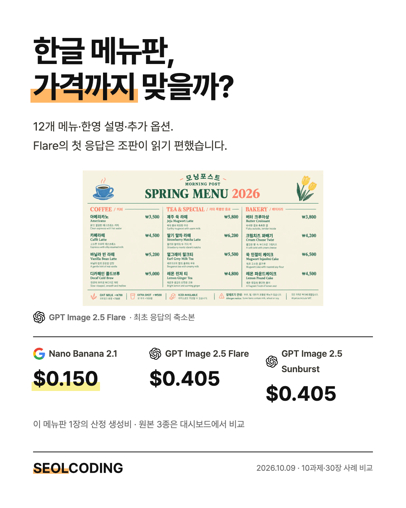
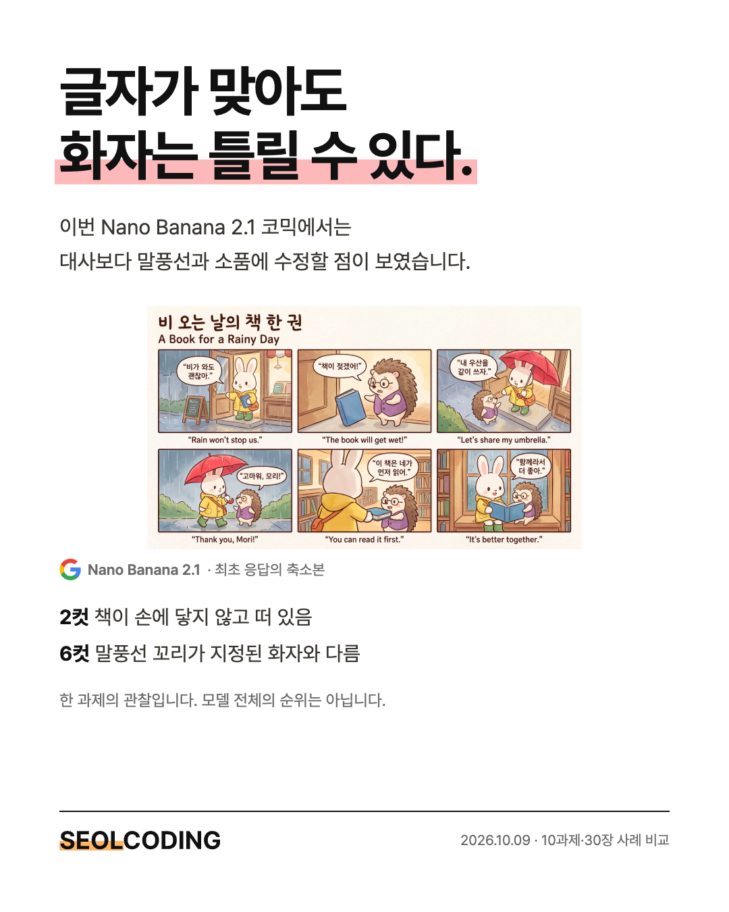
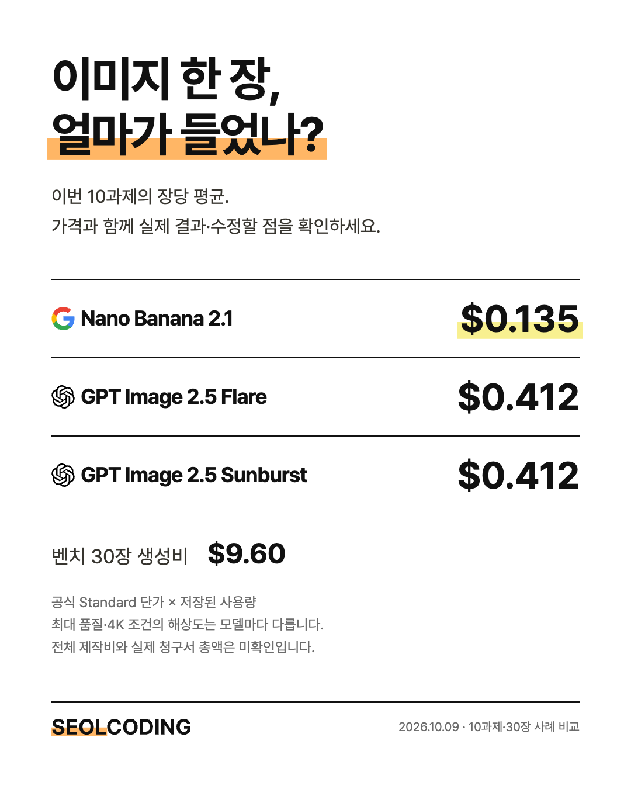

2026.10.09 · 10과제·30장 사례 기록
나노바나나 2.1,
얼마나 좋을까요?
새로 나온 나노바나나 2.1, 얼마나 좋을까요? 한글이 많은 메뉴판도 만들 수 있을까요? 만화와 동화에서 같은 캐릭터와 이야기를 유지할까요? 이미지 한 장에 드는 비용도 궁금했습니다.
직접 하나씩 테스트하기 번거로우실 것 같아, 이미지·가격·다양한 실무 사례로 대신 비교해드렸습니다. Google의 나노바나나 2.1과 OpenAI의 GPT Image 2.5 Flare·Sunburst에 같은 프롬프트를 보내고, 결과 이미지·원문·장당 가격·수정할 점을 함께 볼 수 있는 비교 페이지로 묶었습니다.
메뉴판·견적서·패키지·캐릭터·만화·동화와 기초 이미지까지, 2026년 10월 9일에 생성한 10개 과제·원본 30장입니다. 현재 어떤 모델을 어떤 작업에 쓸지 고르는 데 초점을 맞췄습니다. 메뉴판·견적서·코믹에는 Orca로 실행한 Codex·AGY 내장 결과 6장도 참고로 추가했습니다. 내장 도구는 해상도·품질 조건이 달라 통제된 구버전 성능 실험으로 해석하지 않습니다.
비교한 모델과 조건
비교 대상은 GPT Image 2.5 Sunburst, GPT Image 2.5 Flare, Gemini Nano Banana 2.1입니다. OpenAI에는 날짜가 고정된 모델 ID를 요청했고, Google은 응답 modelVersion을 함께 보관했습니다. Codex나 Antigravity 내장 도구의 이미지와 이번 직접 API 비교는 구분했습니다.
과제마다 원문을 세 모델에 그대로 보내고 최초 응답 한 장씩 보존했습니다. 좋은 그림을 고르려고 반복 생성하지 않았습니다. OpenAI는 max 품질, Google은 4K 설정입니다. 모델별 원본 해상도와 형식이 달라 동일 해상도·계산량을 통제한 비교는 아닙니다.
새 모델 안내: Google 공식 Nano Banana 2.1 문서
| 모델 | 요청 ID | 가로 / 세로 원본 |
|---|---|---|
| Nano Banana 2.1 | gemini-nano-banana-2.1 | 5504×3072 / 3392×5056 |
| GPT Image 2.5 Flare | gpt-image-2.5-flare-2026-09-08 | 3840×2160 / 2336×3504 |
| GPT Image 2.5 Sunburst | gpt-image-2.5-sunburst-2026-09-08 | 3840×2160 / 2336×3504 |
예쁜 그림을 넘어, 무엇을 검사할까
메뉴판에는 한·영 메뉴 12개, 각각의 설명과 가격, 옵션·알레르기·부가세 문구를 넣었습니다. 견적서는 긴 한·영 문단과 4행 표, 수량·단가·소계·부가세·총액까지 지정했습니다. 패키지는 앞면·뒷면·입체 상자에서 브랜드와 제품 정보를 맞추도록 했습니다.
캐릭터 시트는 여섯 시점과 복장을 고정했습니다. 코믹은 6컷의 대사·영문 자막·화자·소품·카메라 시점을, 동화는 두 페이지의 문장·제목·쪽 번호·안전 여백을 지정했습니다. 사진의 빛·개수·위치·손과 연결도 기초 4과제에서 함께 살폈습니다.
프롬프트를 복잡하게 보이게 만드는 것이 목적은 아닙니다. 카페에서 메뉴를 보고 주문하고, 같은 브랜드의 캐릭터가 책을 들고 도서관으로 간다는 이해하기 쉬운 이야기 안에 검수할 조건을 넣었습니다.
다른 벤치에서 가져온 검사 관점
STRICT-Bench는 원문과 OCR 추출을 대조하는 방식, TextAtlas는 밀도 높은 글자 이미지의 다양한 조건을 검토하는 관점을 참고했습니다. 한글은 IOV LABS의 공개 실험에서 받침과 숫자 혼합을 살피는 방법을, 이야기는 ViStoryBench에서 참조 캐릭터와 서사의 일관성을 보는 관점을 참고했습니다.
이번 페이지는 이 연구들의 공식 점수를 재현한 벤치가 아닙니다. 상업 18장에는 로컬 OCR로 원문 발견 여부를 대조하고, AI 작성자가 원본과 필요한 확대 영역을 확인해 체크를 남겼습니다. OCR에서 못 찾은 문구를 곧바로 오탈자로 판정하지 않았고, 사람 다수의 평가를 수행한 결과도 아닙니다.
방법 참고: STRICT-Bench · TextAtlas · IOV LABS · ViStoryBench
메뉴판에서는 조판과 추가 문구가 달랐다
세 모델의 메뉴판에서 12개 메뉴와 가격을 읽을 수 있었습니다. Flare는 3단의 이름·설명·가격 위계가 읽기 편했고, Nano Banana 2.1은 낮은 비용으로 큰 원본을 만들었지만 하단 안내가 빽빽했습니다. Sunburst는 메뉴 정보 외에 원문에 없던 슬로건을 추가했습니다.
이 과제에서는 Flare를 매장 시안의 출발점으로, Nano를 가격 우선 초안으로 골랐습니다. 어떤 모델이든 작은 글씨는 실제 출력 크기에서 다시 검수해야 합니다.

만화에서는 글자보다 화자와 소품이 문제였다
Nano Banana 2.1의 코믹에서는 2컷의 책이 손에 닿지 않고 떠 있고, 마지막 말풍선의 꼬리가 지정된 화자와 다른 인물을 가리켰습니다. Flare는 중간에 책을 든 인물이 설명 없이 바뀌었습니다. Sunburst는 소품 흐름과 배경이 좋았지만 지정한 측면 구도가 약했습니다. 세 모델 모두 영문 자막을 요청과 달리 컷 바깥에 놓았습니다.
코믹과 동화에는 Sunburst의 첫 캐릭터 시트를 세 모델 모두에 동일하게 참조로 보냈습니다. 참조 출처가 결과에 영향을 줄 수 있으므로, 이 결과만으로 독립 생성의 캐릭터 유지 능력을 순위로 정하지 않았습니다.

이미지당 얼마가 들었나
장당 평균은 Nano Banana 2.1 약 $0.1354, Flare와 Sunburst 각각 약 $0.4121입니다. 이번 과제에서는 Nano의 평균 생성비가 약 67% 낮았습니다. Sunburst와 Flare는 토큰 단가가 같았고 과제별 사용량도 같아 생성비가 동일했습니다.
가격은 2026.10.09 공식 Standard 단가에 저장된 API 사용량을 곱한 산정액입니다. 이미지 출력뿐 아니라 입력·참조 이미지·텍스트·추론 등 기록된 항목을 포함했습니다. 세금·환율·크레딧·별도 계약 할인은 반영하지 않았고, 실제 청구서와 대조한 금액은 아닙니다.
벤치 30장의 산정 생성비는 $9.5968입니다. 초기 Google 직접 테스트 2건까지 측정한 32건은 $9.7077입니다. 초기 OpenAI 테스트 6건, 내장 도구 이미지 생성, 조사·개발 에이전트 비용은 미확인이라 전체 제작 총액으로 부르지 않습니다.
가격 근거: Sunburst 공식 모델·가격 · Flare 공식 모델·가격 · OpenAI 모델 선택 안내 · Google 공식 가격 · Nano Banana 2.1 공식 모델

이전 모델과 내장 도구도 참고로 비교했습니다
메뉴판·견적서·6컷 코믹에 Codex와 Antigravity 내장 도구의 최초 성공 원본 6장을 추가했습니다. AGY 세션의 이미지 모델은 gemini-3.1-flash-image(Nano Banana 2)입니다. Codex 응답은 모델 ID를 노출하지 않아 GPT Image 2라고 확정하지 않고 내장 결과로 표시했습니다.
공식 API 가격 문서로 출력분 참고 비용을 계산했습니다. GPT Image 2라고 가정할 때 Codex 메뉴·코믹과 가까운 1664×944 API 크기의 출력분은 low–high 약 $0.00387–$0.13884, 견적서 1024×1536은 약 $0.00474–$0.16464입니다. Nano Banana 2의 1K 이미지 출력분 참고액은 $0.0672입니다. 이 값에는 입력·참조·텍스트·추론이 포함되지 않고 실제 내장 도구 요금도 아닙니다.
원문과 참조 이미지는 보존했습니다. AGY 도구 프롬프트는 원문의 마지막 줄바꿈을 제외하고 일치했으며, Codex 내부 프롬프트 처리와 두 도구의 요청 품질·해상도 tier는 확인되지 않았습니다.
어떤 모델부터 써 볼까
이번 사례에서는 가격 우선의 메뉴·문서 초안에 Nano Banana 2.1, 메뉴·패키지 시안에 Flare, 캐릭터 기준 시트와 풍부한 코믹 장면에 Sunburst를 출발점으로 추천합니다. 사진이나 다른 장르까지 적용되는 모델 전체의 순위는 아닙니다.
고해상도라고 문구나 이야기 조건까지 자동으로 맞는 것은 아닙니다. 납품하려는 작업의 조건을 프롬프트에 적고, 결과 이미지에서 그 조건을 다시 확인하는 과정이 필요합니다. 대시보드에서는 각 과제의 원문, 원본 100% 확대, 비용과 검토를 함께 확인할 수 있습니다.